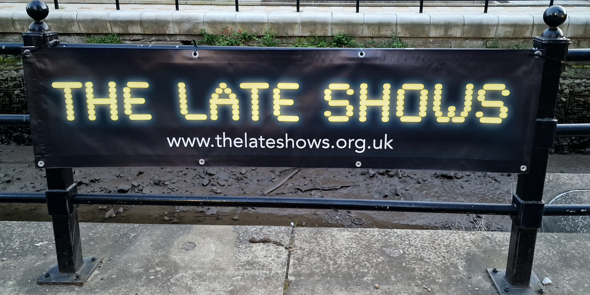
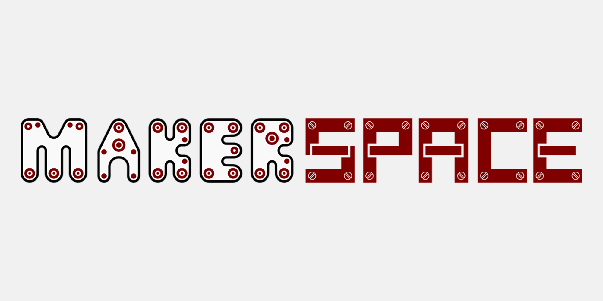
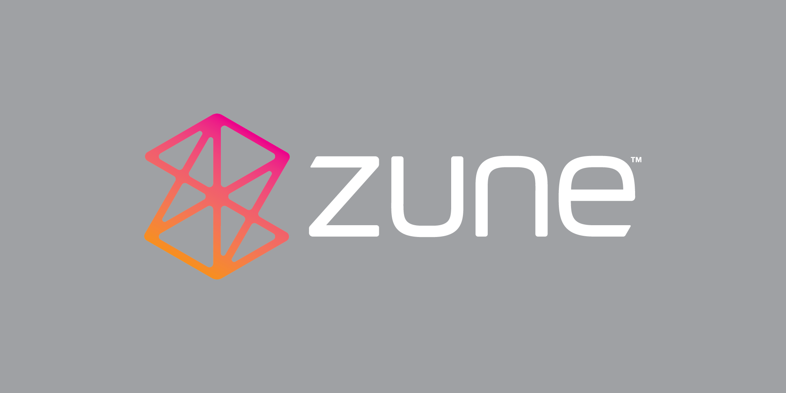

RoguePlanetoid Weekly Update #20
26th May 2023

This week it was Microsoft Build, it was great to be able to catch all the sessions and write Articles for Day One and Day Two.
There has never been a more exciting time to be a developer with the advent of Ai that promises to deliver the biggest change in computing for fifty years and to see just the start of that change in the past year has been incredible,
and be able to build experiences using the same platform and tools Microsoft is using to build their own Copilots is really amazing to see as a developer!
Covering Microsoft Build 2023 in my Articles was a real challenge and posting the notes as soon as they were done was too, hopefully people forgive any typos / mistakes.
Another way I'll be covering Microsoft Build 2023 will be with my latest Episode of the Podcast which will be recorded this week and available on June 1st!
Another thing I'll be doing each month for the next few months is celebrating the twenty-fifth year of my original website CESPage,
which was originally hosted on Geocities - if anyone remembers that, but moved a year later to its own domain and is now archived on GitHub.
This month kicked that celebration off with a set of the original Tutorials for Visual Basic
I wrote including the very first one from 1997 which contains the very first code from Visual Basic. It is amazing to think of having a website back then,
it truly was a different time, with dial-up internet, and far fewer websites available, although that did mean that even ones like mine were popular with hundreds of visitors per day at times!
Next few things I'm working on will be my talk for Scottish Summit on How sharing can make you a better developer for their YouTube
channel that will be made available before the event. I'll also be working on a couple of other things including one I cannot wait to share once it is done which I'm looking forward to.
Longer term I have a few more things to do to help celebrate my original website as well as something that is nothing to do with programming at all, so should be an interesting month in June!
CESPage 25th Anniversary - Visual Basic 6 Tutorials
25th May 2023
This year marks twenty-five years since the creation of CESPage in 1997 intially starting on Geocities before moving to it's own domain a year later!
The very first content ever created on the website was a set of Tutorials for Visual Basic 6 and to help celebrate they have all been republished on Tutorialr.com,
including Hello World, Hello Custom, Task Tray, Drawing, Simple Text Editor, Simple Drawing Package, Lucky Dice, Lucky Lotto and
Weblink ActiveX! These Tutorials are presented as-is, although I have learned a lot since they were originally written and many would be written differently but good to look back and see how far I have come as a developer since then,
and be able to help celebrate by sharing these Tutorials.
The Late Shows 2023
21st May 2023

The Late Shows were held this week on Friday 19th of May and Saturday 20th of May.
The first evening on the Friday was in Ouseburn and the surrounding areas and it was amazing to visit as many venues as I could including The Biscuit Factory,
The NewBridge Project, Biscuit Tin Studios, Shieldfield Art Works, Ouseburn Studio, Cobalt Studios, Gingerinos, Northern Print, Jim Edwards Studio Gallery,
36 Lime Street, Seven Stories, Bottleworks and Hotel Du Vin. I had been to The Late Shows before but there were still many venues I had never
been to and even those I had been were either completely different from the last time I was there or had different artists in residence. It was great
to talk to one artist about their work and it turned out they used to work with AutoCAD before retiring and we had a good chat about the impact AI was
having and the pace of change we both had seen.
The second evening of The Late Shows on the Saturday was around Gateshead and Newcastle and started with a visit to Maker Space in Gateshead, who were taking
part and have done so for many years. I was pleased as a member to see everything people had to show off to the visitors, and there was even the surprise of seeing my own
3D printer on display next to the others, which was a nice bonus. This was followed by a visit next door to Orbis Community before heading over the river to Newcastle to visit
Bessie Surtees House then Newcastle Castle, Four Quarters, Newcastle Arts Centre, The Black Swan Venue Bar and finally the Assembly House. It was great to see
a different side to Gateshead and Newcastle but the last two evenings had caught up with me and wasn't able to make it anywhere else, but it was still a fantastic
experience to see all the places and amazing artwork that I had seen and experience places and sights I would not otherwise get to do!
RoguePlanetoid Weekly Update #19
19th May 2023
This week it was Learn at Work week at Bede where I did a session on
Blazor Emoji Bingo. It was the very first time I've done a
workshop where I also followed it along with those there. It was great to see so many people follow along with the Workshop and there was a special
bonus of a prize for the winner of the game at the end of the session which were a set of two 3D printed Emoji created last week at Maker Space
at the last Welcome Wednesday. It was fun putting together the workshop and wanted to put as much effort as possible into it,
the other sessions for the Learn at Work Week have been really interesting too and was great to play a part in the experience.
I've got a great schedule of content lined up to create this year, around this time last year was when I kicked off doing talks and more content but am pleased
that this year I've already done more than I had done last year. I have so many things I want to do, I've learned so much from talks and the community myself so
is great to be able to do my bit in return! I've got a few talks in mind I would like to deliver at a few events so will start getting some of that together, will
make sure this year is my biggest year ever for content!
Next week is Microsoft Build and I will be covering the conference here with Articles about
the keynotes and sessions I'll be virtually attending, I'm hoping one day to be part delivering a session or going along to Seattle again to see it in person but will be
good to see it online, it has been really good the past few years and know this year it will be even more interesting with all the developments regarding AI,
which I've had a keen interest in!
RoguePlanetoid Weekly Update #18
12th May 2023
This week I was at Maker Space for Welcome Wednesday, I didn't do a dedicated
post as what I was doing there will be a surprise which is for something related to the Learn @ Work week at Bede.
I've almost finished my Workshop for the Learn @ Work week, which is Blazor Emoji Bingo,
I've enjoyed putting it together and is just the finishing touches and run throughs before I do it for real next week,
I'm really looking forward to it, along with attending a few of other sessions on offer!
I've also been working on a few things to help celebrate the 25th Anniversary of my original website which originally
started on Geocities before becoming CESPage.com. I'll be reposting some original content as well as
some brand new content to help celebrate the websites! I have put together my schedule of all the work I am doing this year which will
include Articles, Episodes of the RoguePlanetoid Podcast and more!
It is great to be even more active this year and have a whole lot of content planned I can't wait to put together and share!
Next week along with it being Learn @ Work at Bede it is The Late Shows,
which is where a lot of venues in Newcastle and Gateshead open up to the general public to show off what they do which will include Maker Space,
I've been seeing some of the things they have prepared so will be good to pay a visit and also check out the other places that are showing
off things, I've done these events in the past but not for a while so is a great way of seeing things I wouldn't normally get the chance to see otherwise!
RoguePlanetoid Weekly Update #17
5th May 2023
This week saw the release of the fourth Episode of the RoguePlanetoid Podcast about Spotify for Developers!
On Twitter the Spotify for Developers account was kind enough to re-tweet about
the Episode which was amazing! It will be good to see if can encourage more developers to take advantage of the Spotify platform
in their applications with Spotify for Developers.
This week saw the return of Zune.net Microsoft to promote STEM
including 3D printing a Zune on the International Space Station and the film Guardians of the Galaxy Vol. 3
from Marvel Studios which features a Zune. As a big fan of Zune having created Zunepedia
in 2021 I was very pleased to see this, so when I was at Maker Space this week I decided to mark this by 3D printing a Zune 80 / 120 although am hopeful the model
of the original Zune being printed on the International Space Station will be made available to print down here on Earth!
So far it has been great writing new Articles as well as reposting those Articles from LinkedIn with just
a few more of those to bring over! I'm working on a Workshop using Blazor for a Learn @ Work week at Bede
which I'm looking forward to delivering later this month and pleased to announce I'll be bringing it to Tutorialr.com
the following month! I've also got a plan for the rest of the year with a few things I hope to get done including some which I'm also happy to announce here that will help
celebrate the 25th anniversary of my original website!
Maker Space - 3rd May 2023
4th May 2023

It was another Welcome Wednesday at Maker Space and with many regulars, some who had not been for a while
and some new potential members visiting. Inspired by the relaunched zune.net to help inspire STEM learning including
3D printing a Zune on the International Space Station to celebrate the release of Guardians of the Galaxy Vol. 3 which features Zune, I decided to 3D print
one right here on earth, I couldn't track down a model of an original Zune so chose the second-generation model which was the Zune 80 / 120!
You can see the results of the print were pretty good, albeit in a much smaller scale version, alongside this was my second 3D print of the evening which was to help
mark the announcement of a brand new animated Babylon 5 movie that had just been announced by
J. Michael Straczynski on Twitter that day, which is a Link
used by the characters in the original series such as Captain John Sheridan and was printed actual size! I'm looking forward to planning more things to print,
which will hopefully be the model of the original Zune that is being planned to be printed International Space Station,
but if not will see what else I can print at Maker Space next Welcome Wednesday!
Welcome Guardians, Zune.net is back online!
1st May 2023

I never expected to see this day but Zune.net is back online!
Although for a different reason as Microsoft has relaunched the website to encourage STEM in association
with the release of the film Guardians of the Galaxy Vol. 3 from Marvel Studios!
Empowering the galaxy includes learning about 3D Printing, guard the galaxy with
Azure Space and Create a Music Player!
It was amazing to see the original Zune make an appearance in Guardians of the Galaxy Volume 2 when Peter Quill was gifted
one then and am pleased to see it also not only makes an appearance in the film but Microsoft is doing something like this, even going as february-2023
as having Scott Hanselman talk about Reviving a Microsoft Zune in 2023,
when I put together Zunepedia in 2021 I never expected to hear anything from Microsoft about
Zune so it is amazing to see this happen!
RoguePlanetoid Podcast - Episode Four - Spotify for Developers
1st May 2023

Today sees the release of Episode Four of the RoguePlanetoid Podcast
about Spotify for Developers which allows developers to create applications
using Spotify's 100 million songs, 5 million podcasts and more. Learn what features are available along with an SDK
for .NET developers and more about Spotify for Developers. Along with the Episode is now a transcript
available for this and all previous Episodes of the RoguePlanetoid Podcast.
You will find the Podcast where you listen to your podcasts such as Spotify,
Amazon Music, Stitcher, Apple Podcasts, Pandora
Google Podcasts along with YouTube where you can catch up with previous episodes
and Subscribe or Follow so you don't miss any future Episodes.